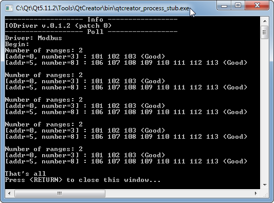
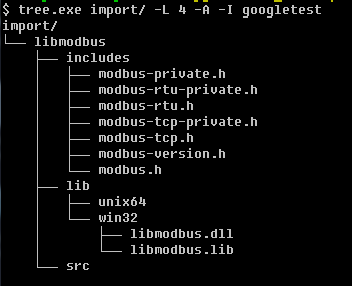

IODriverLib is a Simple C++ Lib for ModBus/Tcp (Client).
As additional options, it is planned to add functions for working with other communication protocols.
This library depends from libmodbus
#include "iodriverlib.h"
#include <iostream>
#include <string>
#include <thread>
#include <chrono>
#include <memory>
#include <exception>
using std::cout;
using std::endl;
int main(int argc, char *argv[])
{
auto lib = std::make_unique<IODriverLib>();
// IODriver info
cout << "------------------- Info -----------------" << endl;
cout << lib->info();
// Poll 5 modbus registers since address=0
cout << "------------------- Poll -----------------" << endl;
IDriver *drv = lib->createDriver("Modbus");
// Modbus server: ip=127.0.0.1, port=502
drv->setComConfigure("127.0.0.1:502");
// range №1: 0..2 (3 registers)
// range №2: 5..12 (8 registers)
if (IDriver::Config::Ok != drv->setDataConfigure("{0,3} {5,8}"))
cout << "Bad data config" << endl;
cout << "Driver: " << drv->name() << endl;
drv->start();
cout << "Begin:" << endl;
for (int i=0; i<5; i++) {
std::this_thread::sleep_for(std::chrono::seconds(1));
std::vector<IDriver::Data> datas = drv->readDatas();
std::cout << "Number of ranges: " << datas.size() << endl;
for (auto &data: datas) {
cout << "[addr=" << data.addr << ", number=" << data.regs.size() << "] : ";
for (uint16_t addr=data.addr; addr<data.addr+data.regs.size(); addr++) {
std::cout << data.regs.at(addr-data.addr) << " ";
}
cout << "(" << data.quality_to_string(data.quality) << ")" << endl;
}
cout << endl;
}
drv->stop();
cout << "That's all" << endl;
return 0;
}
| Console output | |
|---|---|
|  | |
| addr=0, value=101 | |
| addr=1, value=102 | |
| addr=2, value=103 | |
| addr=3, value=104 | |
| addr=4, value=105 | |
| addr=5, value=106 | |
| addr=6, value=107 | |
| addr=7, value=108 | |
| addr=8, value=109 | |
| addr=9, value=110 | |
| addr=10, value=111 | |
| addr=11, value=112 | |
| addr=12, value=113 | |
$ sudo apt-get update
$ sudo apt-get install libmodbus-dev
The second way - to compile (libmodbus, googletest) libraries and place its in the import folder in the correspond subdirectory.

$ mkdir build && cd build
$ cmake .. -G "Unix Makefiles" mingw32-make.exe && mingw32-make.exe install
$ cmake .. -G "Unix Makefiles" -DTEST=ON && mingw32-make.exe && mingw32-make.exe install
$ cmake .. -G "Unix Makefiles" -DCMAKE_CXX_COMPILER="C:/Qt/Qt5.11.2/Tools/mingw530_32/bin/g++.exe" -DCMAKE_MAKE_PROGRAM="C:/Qt/Qt5.11.2/Tools/mingw530_32/bin/mingw32-make.exe" && mingw32-make.exe && mingw32-make.exe install
$ cmake .. -G "Unix Makefiles" -DCMAKE_CXX_COMPILER="C:/Qt/Qt5.11.2/Tools/mingw530_32/bin/g++.exe" -DCMAKE_MAKE_PROGRAM="C:/Qt/Qt5.11.2/Tools/mingw530_32/bin/mingw32-make.exe" -DTEST=ON && mingw32-make.exe && mingw32-make.exe install
$ mkdir build && cd build
$ cmake .. -DTEST=OFF && make && make install && cmake .. -DTEST=ON && make && make install
Result: binaries and headers will be foudn in export folder
$ mingw32-make.exe test
$ make test